An exploratory comparison of Bark-spectrum PCA and FastTrack formants, using the same speakers, geographic axis, central band, and six directed vowel pairs.
The analysis contains 204 complete speakers from 74 villages. Gotland and the Finnish regions Åboland, Nyland, Österbotten, and Åland are excluded. Village position is projected onto the line from Löderup to Arjeplog. Tjällmo and Rimforsa, with a 35-map-unit margin, define the central band; villages beyond it form the southern and northern groups.
For each vowel, two coordinated natural-spline models trace its path through acoustic space over the geographic axis. Models use village medians so villages contribute equally; speaker observations remain visible. The grey ellipses show village-bootstrap uncertainty at the representative South, Centre, and North positions. For each directed pair, the analysis also models vector angle and endpoint distance over the same axis.
PCA uses the traditionally oriented −PC1/−PC2 spectral-score plane. FastTrack uses traditionally oriented Bark −F2/−F1. The red–grey–blue coding denotes South–Centre–North.
The clearest starting point is the movement of individual vowel anchors through acoustic space. These three vowels were selected before considering pair geometry: /uː/ and /oː/ show the strongest and most consistent geographic trajectories, while /eː/ provides a useful, more moderate comparison. Curves are fitted over the Löderup–Arjeplog axis; the grey ellipses summarize uncertainty at representative South, Centre, and North positions.


| Pair | PCA angle R² | FastTrack angle R² | PCA distance R² | FastTrack distance R² | Reading |
|---|---|---|---|---|---|
| /uː–oː/ | .33 | .24 | .07 | .13 | Strong nonlinear endpoint movement; angle differs geographically |
| /oː–ɑː/ | .35 | .43 | .17 | .12 | Best replicated angle result |
| /ɑː–æː/ | .02 | .00 | .03 | .10 | Little evidence for changing pair geometry |
| /æː–eː/ | .15 | .11 | .12 | .15 | Modest, similarly ordered change |
| /yː–ʉ̟ː/ | .03 | .06 | .15 | .20 | Weak angle; some separation change |
| /ʉ̟ː–øː/ | .00 | .01 | .26 | .16 | Distance-dominated geographic structure |
Each figure shows the two vowels separately, their pair vectors, and the angle and distance models. Click an image to open it at full resolution.
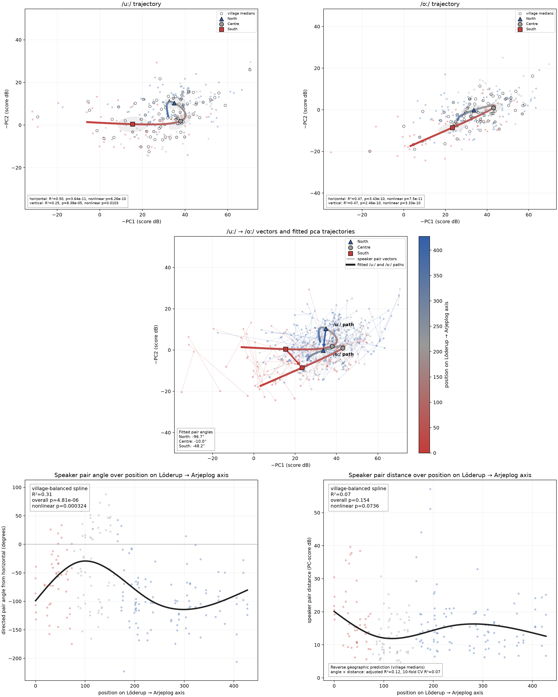
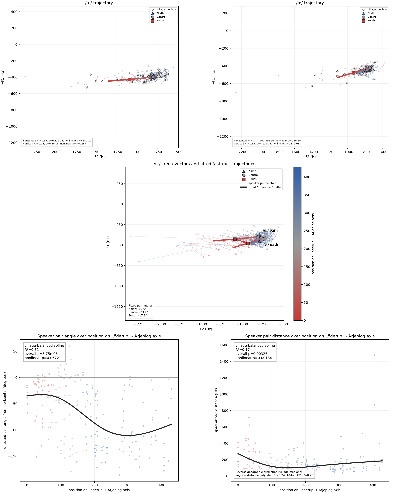
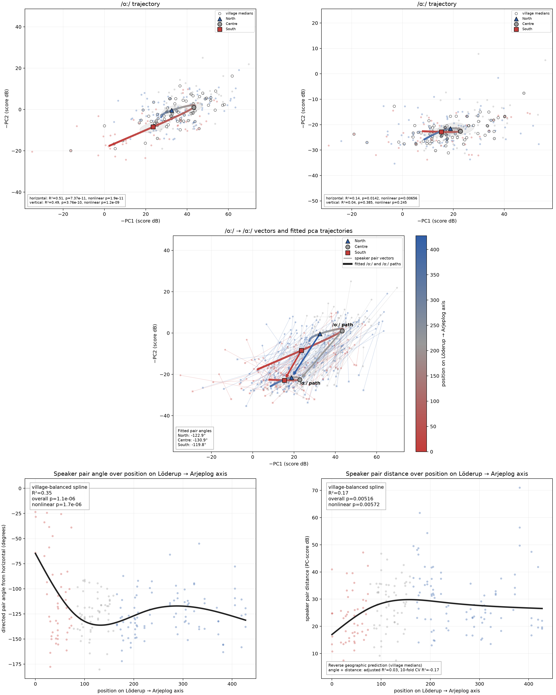
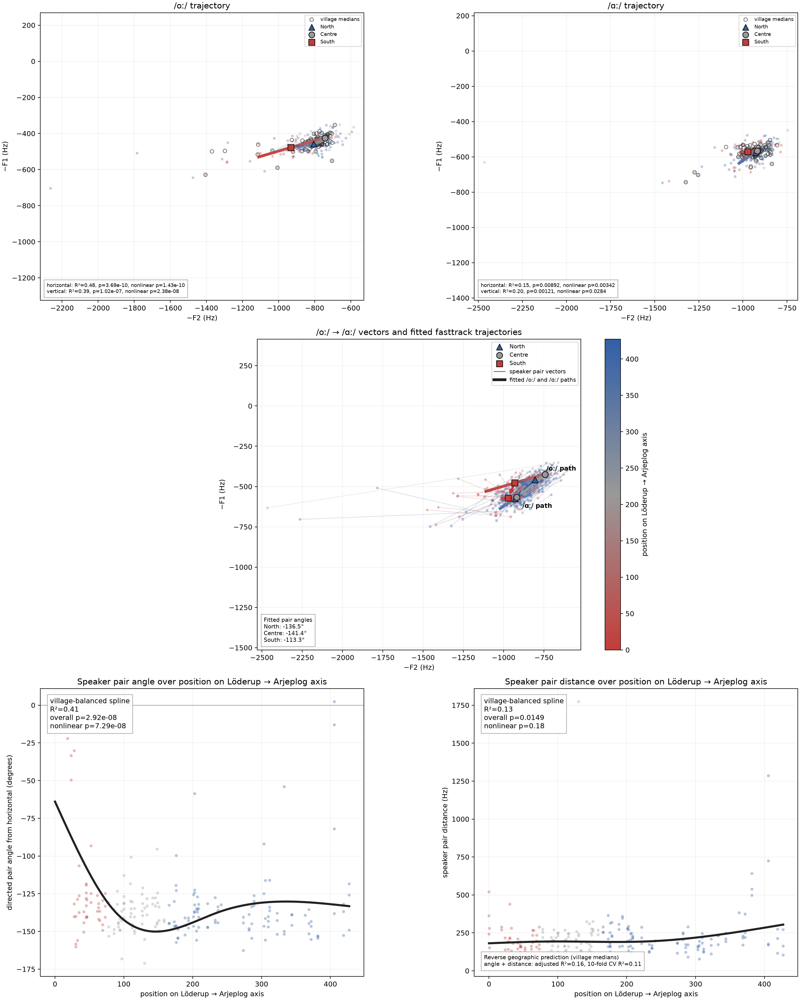
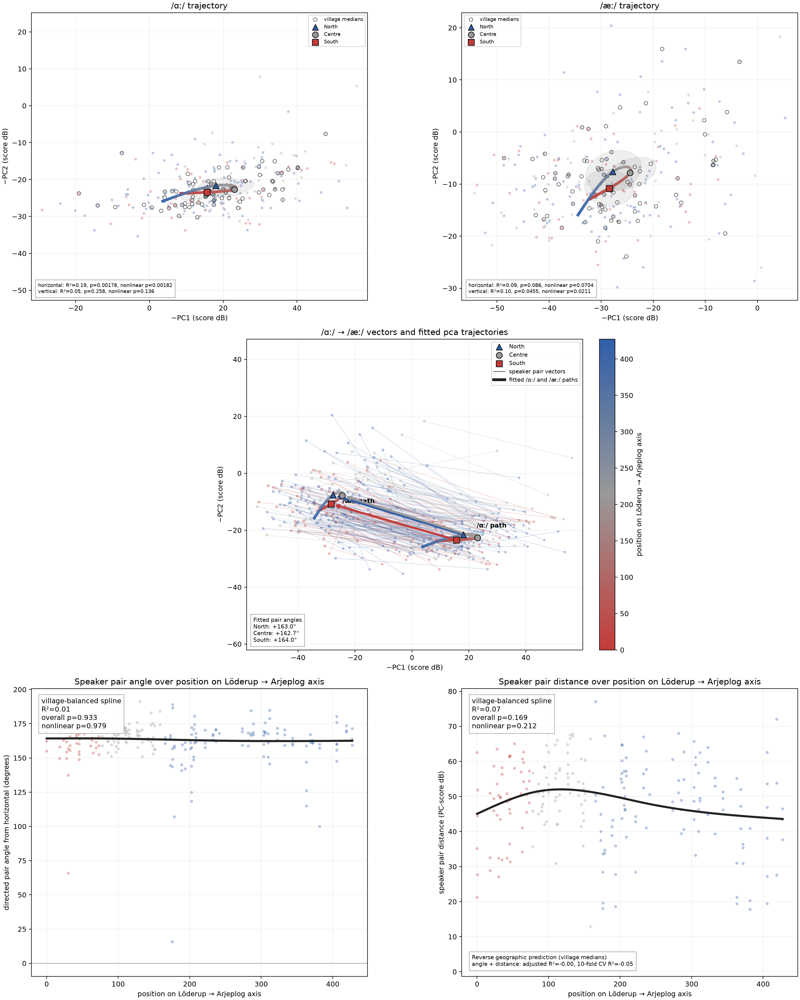
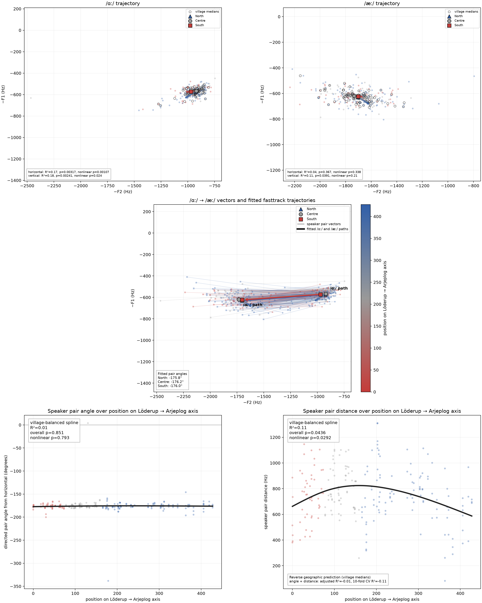
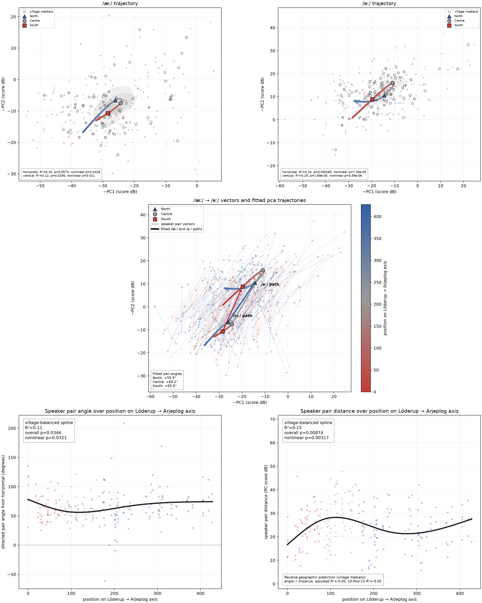
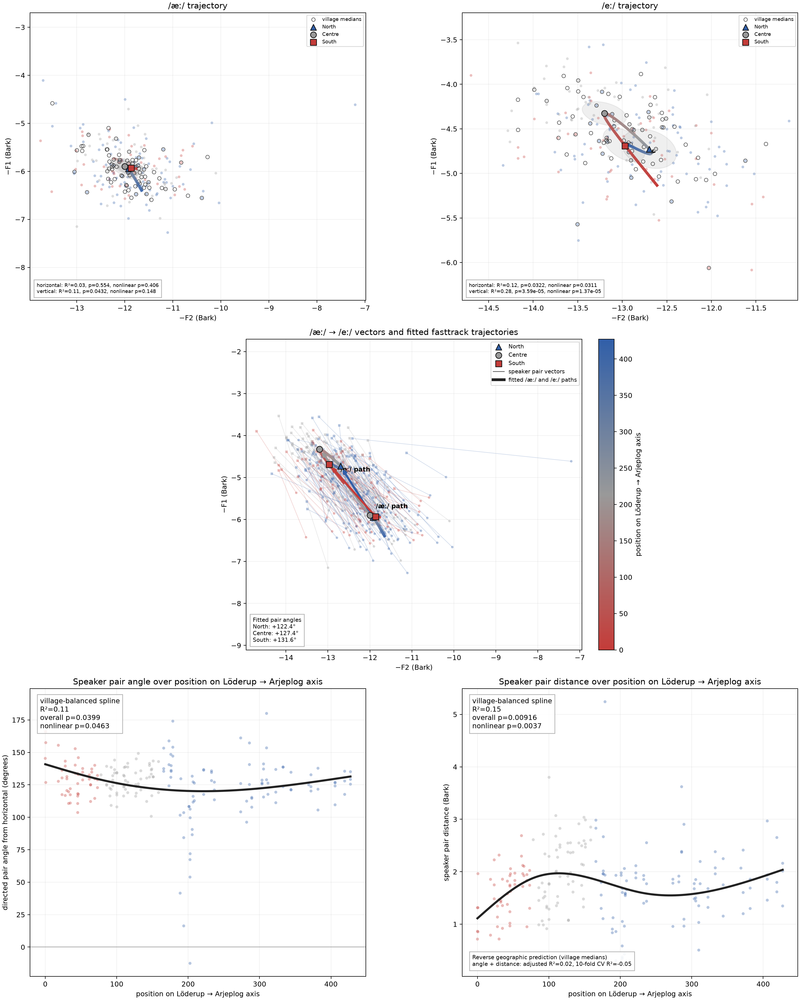
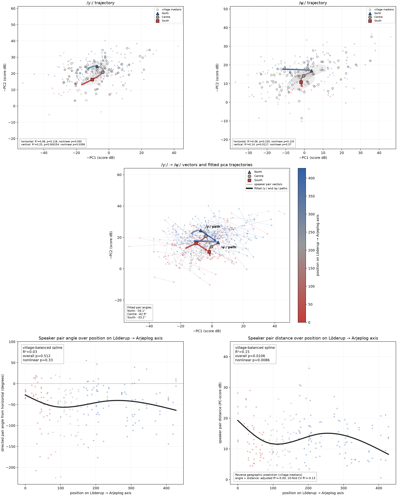
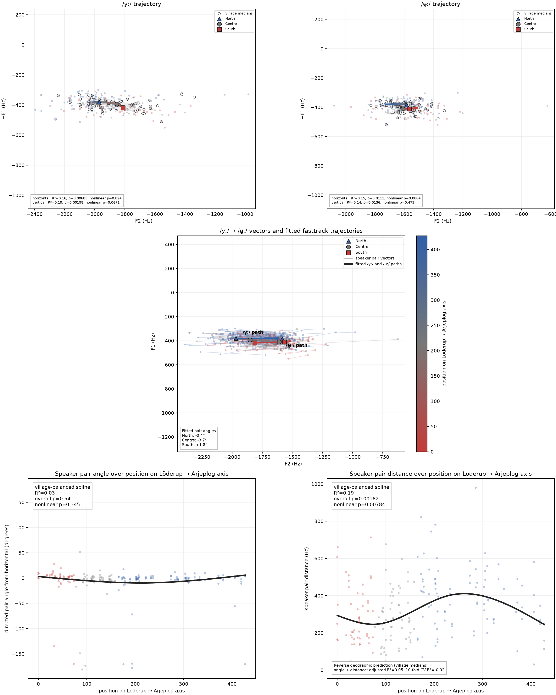
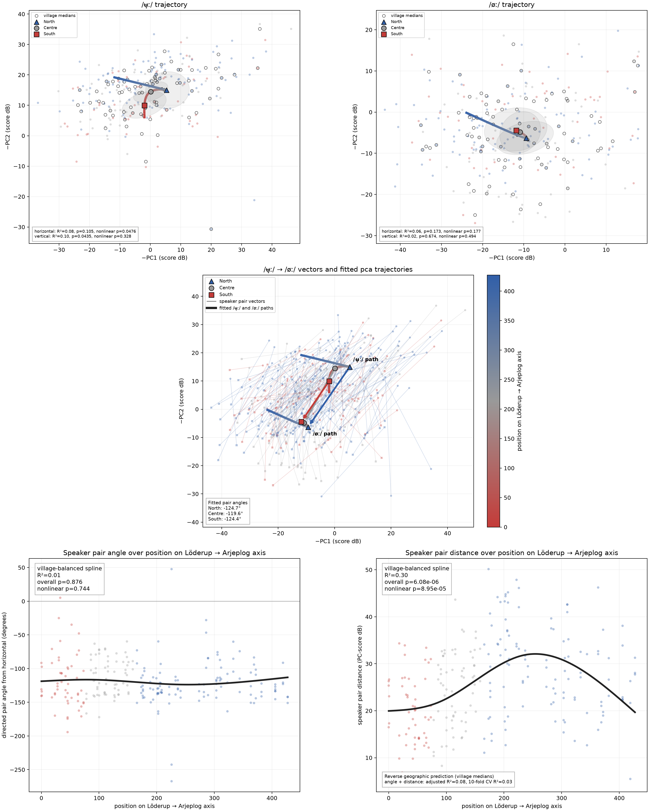
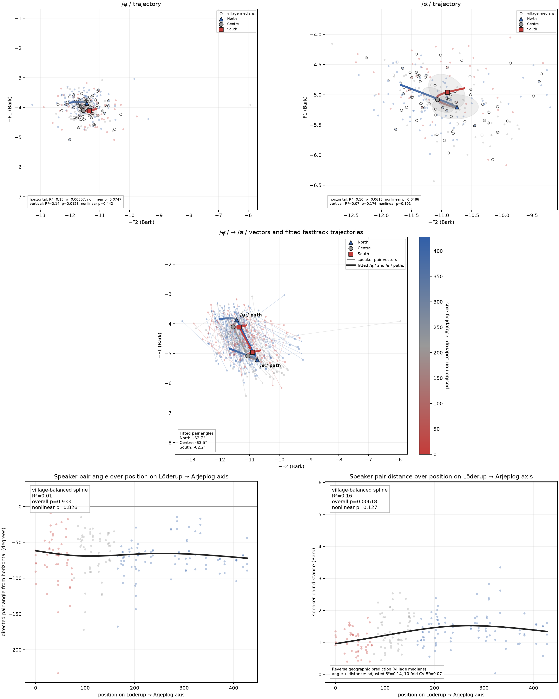
The broadest defensible conclusion is not that the entire vowel system undergoes one uniform rotation. Geographic organization is strongest for particular vowels and differs by pair: some relationships change mainly in direction, others mainly in separation, and several show little systematic change. Agreement between PCA and FastTrack for the prominent patterns makes them less likely to be artifacts of one acoustic representation. The results therefore support a pair-specific account of regional vowel-system geometry, with the Löderup–Arjeplog axis as a useful descriptive coordinate rather than a complete model of Swedish dialect geography.
As a final, more compressed view, the continuous trajectories are reduced to North, Centre, and South. Pair midpoints are calculated within speakers, summarized within villages, and then across villages so that villages—not recordings—carry equal weight. Corpus vowel anchors are likewise village-balanced.
Open circles show the true two-dimensional regional midpoint. Filled circles show its projection onto the corpus-wide vowel-pair axis; dotted connectors retain the perpendicular component removed by that projection. Translucent ellipses show village-bootstrap uncertainty.


The plots are best used diagnostically: agreement in regional ordering across PCA and FastTrack is more informative than absolute positions, while large dotted connectors warn that an along-pair account is incomplete. PCA and Bark formant coordinates are not directly commensurable.
Download midpoint tables: PCA regional midpoints · FastTrack regional midpoints
Download model tables: PCA pair models · FastTrack pair models · PCA settings · FastTrack settings
{kind=link}
{kind=link}
{kind=link}
{kind=link}
{kind=link}
{kind=link}
{kind=link}
{kind=link}
{kind=link}
{kind=link}
{kind=link}
{kind=link}